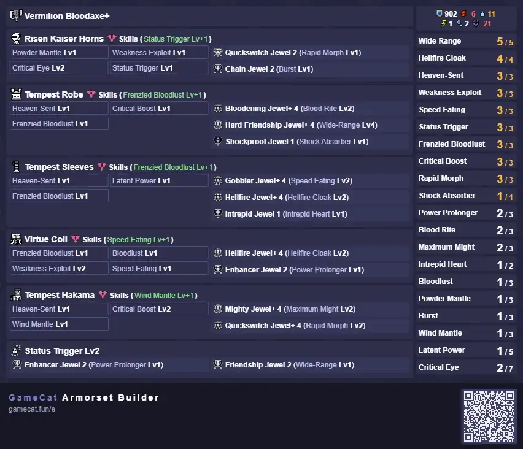

This guide was written by Sasch, and reviewed by Juzzi.
Sasch has been privately optimizing and speedrunning since MHTri, going public with the release of Sunbreak, writing and reviewing guides for Switch Axe, crunching numbers and giving advice both behind the scenes and in Gathering Hall's Switch Axe chat.
Juzzi has been playing since Iceborne's Fatalis update, regularly speedruns, has won CGS twice and strongly dislikes Guides and advice that do not account for practicality in favour of looking stronger on paper.
As such, this guide sets out to provide the following:
- Sets and Setups for the average player,
- Sets and Setups for advanced players,
- gameplans for those sets,
- upgrade paths for those sets,
- an explanation on what makes and breaks those sets, and why they work,
- a better understanding of what's important for Sunbreak's iteration of Swaxe, based on Numbers, experience and applicability, and
- alternatives for people that just wish to dabble
Remember to take your time. Don’t compare yourself to others, don’t let anyone tell you how you can and can’t enjoy the game you paid for. This guide does not exist to push a meta onto you, merely to guide those who are a little lost on their way to achieve measurable greatness.
All Sets listed in the following Sections generally assume players to have general knowledge on moveset options and knowing Swaxe's kit and general matchup knowledge, aswell as a certain comfort in having basically no defensive options. If you consistently eat hits you could have avoided, want a brain-off (and bad) playstyle, none of the sets on this page are for you.
Skill Priority for endgame Sets are different from Progression Sets, and depend on wether you go Raw or Element.
Traditional "ranking" of skills creates the illusion of being able to drop "lower rated" skills. To avoid this, the following list has repeating numbers. Sets in Sunbreak, and even base Rise, have so much space that these don't usually compete for slots with other options.
| Importance | Skill, Level, (Abbreviation) | Notes |
|---|---|---|
| 1 | Rapid Morph 3 (RM3) | The single most broken skill in the whole franchise, arguably. It boosts the animation speed and damage of morph attacks, which is 2 out of 3 moves of our main damage combo and a good number of utility options. Once you get access to it, never drop below 3. |
| 2 | Weakness Exploit 3 (Wex3) | 50% affinity (crit chance) for hitting parts you want to hit in the first place - weakspots (HZV of 45 or above). While Phials don’t crit in this game, the majority of our big meaty swings can. Wex is the most efficient source of affinity. Use it, because - |
| 2 | Critical Boost 3 (CB3) | - Critical hits deal 25% more damage in MH. Critical Boost 3 raises that that 40% more damage (total), or a factor of 1.4, making the Wex3 CB3 combination one of the best Return-on-Investment Skills in terms of Skill points → Damage |
| 3 | Purple Sharpness + Maintenance | Sunbreak Swaxe is a much more elementally leaning weapon than its previous iterations. As such, it really enjoys the increased modifiers from Purple Sharpness and wants a way to keep it for as long as possible, ideally the whole hunt. Early on, the easiest way to achieve this is enough Handicraft to reach purple (typically 3) and then opting for Protective Polish 3, which grants 90 seconds of no sharpness reduction. Later Sets opt for either Heaven-Sent 3 which gives flat out infinite sharpness, or 100% affinity + Master’s Touch 3, sometimes supplemented by Bladescale Hone or, rarely, Razor Sharp 3. |
| 3 | 100% Affinity | See the Wex and CB entries above. More affinity = more damage = more hit stuff deader gooder. |
| 3 | Fire, Water... Attack 5 (Ele 5) | Swaxe being more elementally inclined makes us want to scale that element further. Note that both of these scale off of base element and as such don’t interact with other increases. If you’re very strapped for slots, Elder Bless gives the bigger bang for your buck, but on standard sets you’ll almost always be able (and want) to fit both. |
| Kushala / Teostra Blessing 2 (Elder Bless 2) | ||
| 4a | Mail of Hellfire 3 (MoH3) | Raw Sets use this on Red Scroll, Element chooses Blue. Note that level 1 is technically the most efficient for Raw, level 3 is the most efficient for Element. Further note that the buffs are opposite to Dereliction, where the scrolls are reversed, making them usually mutually exclusive. |
| 4b | Furious 3 and Dragon Conversion 3 (Furiosu DC3) | Furious 3 gives +20 Resistance in all elements. DC3, on Blue Scroll grants +15 Resistance for all elements by hitting for 30 times. Phial ticks count as full hits for this. Swapping to Red Scroll sets all Ele Resists to 0 but converts positive res into element (conversion rate 4:1). On its own, this combination can grant up to 43 more element, a massive buff. It’s very comfortable to use, as the DC buff is permanent. Note: When going for this, do not use Skill+ when qrafting, as it’s guaranteed to take away some ele res, which hurts your potential damage. |
| 5 | Burst 3 | Hitting a monster gives +5 Raw and Element and puts you on a 3s timer. If you hit more during that window, the timer resets and more raw and element gets added, until the cap of +15 raw and +15 ele. The real kicker here is the +15 element, which is a lot with all the multipliers elemental Swaxe has going for it. |
| Burst 1 | Unlike Element, for Raw sets, Burst is a 1-point-Wonder. 10 Raw for a single level 2 slot is great, but the extra 5 from the additional 4slot (or 2x 2slot) does not justify the investment. | |
| 6 | Attack Boost 4 or 7 (AB4/7) | Nice and simple extra raw. The +% are based off of base raw (weapon attack + slot upgrades + augments). 4, 6 and 7 are the desirable levels, just avoid levels 1-3 and 5, as they’re inefficient for their investment:damage ratio. |
2.1A - Skill Priority Table, Element Sets, Raw Sets | ||
| Importance | Skill, Level, (Abbreviation) | Notes |
|---|---|---|
| 1 | Frenzied Bloodlust 2/3 (FBL2/3) | Due to the sheer damage EBC provides, we want a way to access it as consistently as possible. Having 3 bugs enables pseudo-chains (i.e. back-to-back with a little delay), while 4 can chain indefinitely for as long as the picked up bug lasts. FBL2 will make the generated third bug last until Bloodlust procs again, while FBL3 can make it permanent. Wind Mantle 1 is a cheaper option that does not enable counter-chains but can still help especially with setups that involve Wirestep or Soaring Wyvern Blade. |
| Wind Mantle 1 (WM1) | ||
| 1 | Power Prolonger 1/2 (PowPro 1/2) | Helps massively with Amp uptime, very recommended in Multiplayer where you cannot guarantee getting all the counters off in time. Also helps with prolonged Afflicted Topples where you would otherwise lose amp. |
| 1 | Bloodrite 1 (BR1) | Hit a broken part to heal, very comfy skill. Mandatory for Blood Awakening sets, but Anti-Synergetic with Strife sets (except berserk). |
| 1 | Intrepid Heart 1 (IH1) | IH comes with an extra gauge, which fills up by attacking monsters. Swaxe needs 40 hits to fill it completely - phial ticks count in full, meaning you can activate it pretty fast. Once filled, it’ll stay full until you take a hit that would knock you back or send you flying. This consumes the bar, but negates that knockback and drastically reduces damage taken. It’s a hyper armor on demand skill, which makes Heaven Sent just that much more comfortable. Being on a level 1 slot deco makes it pretty easy to fit, highly recommended. Level 2 only adds an explosion that deals 300 damage upon being hit and activating IH, making it a fairly underwhelming “upgrade”. |
| 3 | Evade Extender 1 (EE1) | Can help with positioning and getting out of a lot of attacks, but can also land you in a lot of attacks and mess with your positioning. Using it is preference, just avoid going above 1. |
| MP | Shockproof 1 | Completely useless in singeplayer, flinch free on crack in multiplayer. Can increase your dps massively just on virtue of not being punted around by the next Bullet Barrage spamming random (and other offenders). Theoretically, you can adapt your playstyle to not needing either Flinch Free or Shockproof, so don’t worry about not being able to fit it, but it does make positioning and aggression just a little bit easier. |
2.1B - Recommended Comfort Skills | ||
Strictly speaking, the baseline requirement for most sets is MR10Master Rank 10. In order to make the most out of them,
AR241+Anomaly Rank 241 or higher is recommended. This is in part due to the final Decoration unlock at around that time, in part to get good enough charms, and
mostly in order to craft and augment the Weapons.
Most Raw weapons will need a rampage slot upgrade, and all element weapons need Slot upgrades. Element starts to shine once you start getting Sharpness from the Slot upgrades, and really shine after having fully augmented them.
For these reasons, the soft requirement will be AR241+Anomaly Rank 241 or higher, with the hard requirement being MR10Master Rank 10
and having access to people with Risen Elder quests.
The specific requirements for each individual Set are listed underneath said set.
Dango/Food Skills:
There are no specific Food Skills for Swaxe. Super Recovery Dango at Level 4 can be used to help with Strife Uptime on Berserk sets, but can also be an active detriment if you use Dereliction for Strife. Booster is a flat raw increase and good enough at Level 1; note that Levels 3 and 4 have a shorter duration. Weakener works on some quests, but not on Anomalies, where
most people will spend the majority of their time, making it less useful than it could be. Moxie/Adrenaline are okay, but not great to rely on in Moxie's case, and speedrun specific in Adrenaline's case.
Pets:
Swaxe is not particularly hungry for environment wirebugs and generally prefers monsters to move, given how strong EBC is. Cats don't contribute much to damage beyond that, so they're not a big consideration for optimization.
With the nerf of Gundogs, Chaindogs are now the go-to choice. They excel at dealing elemental damage, and customizing their Skills is very easy to do with Sunbreak's feature of transfering pet Skills from one to another. The standard Setup is:
| Skill | Equipment | Weapon |
|---|---|---|
| Melee Centric | Dual Chains | C Rathalos Sword X |
| Attack L | C Almudron Wings X | |
| Attack S | Choice between Blitz and the Healing Scrolls | C Thunderblade |
| Element Attack Up | C Daora Scythe X | |
| Artful Dodger | C Crimson Eclipse Sword | |
| 2.3A - Chaindog Setup | ||
Followers:
Followers don't typically compete with player damage, if you play well enough. Hinoa and Utsushi, both on Horn, offer the best bang here with their Element and Raw buffs.
Less strong is Rondine on Swaxe, who tends to spam powders and traps, which can be nice. Luchika on HBG can provide extra Staggers and KOs, but doesn't do much outside of that. Hinoa and Utsushi is the clear best combo, but they don't typically make or break a hunt either.
The sets on this page don't assume the use of any particular Follower, or Pet, or Dango.
The following sets are ordered from weakest (and cheapest) to strongest (and most expensive).
They all assume the use of EBCElemental Burst Counter and PSBPhial Switch Boost Rampage decoration. Unless specified, no other Switch Skill is mandatory.
The Rampage Decoration is non-negotiable for any of the Sets below.
Sunbreak in its final state is a predominately Element-Oriented meta. Switch axe usually hovers around 50/50 for Raw/Element damage ratio, with few notable Raw matchups - see Section 4, Matchup Chart.
“Budget” refers to a rough outline of required Charms and Qrafts - Low Budget sets usually need 3 +1 Skill Qrafts, Medium Budget require 6 unslottable skills, either through Charm or Qrafts, while the High End set requires a rare charm alongside qrafting +2 skill on a single piece. Most Sets
shown are baselines, meaning nothing can be dropped in order to make them cheaper, or to fit other skills instead, without also heavily nerfing the Sets damage.
Note that most Element Sets use the same Helmet and Waist. The two major options between the remaining three pieces is either 3x Amatsu or 3x Primordial Malzeno.
Due to this, the only thing that changes between elements is the Weapon and the Element Attack/Elder Bless Deco of choice, meaning you don’t actually need to build 5 different sets.
Sets are ordered within their subsection from Easiest -> Hardest to build and Lowest -> Highest Damage Potential in standard gameplay.
Element
Note: Risen Shagaru Armor pieces are called Virtue for Type 1/Male characters, and Prudence for Type 2/Female characters.
 Open image in new tab
Open image in new tab
Requirements:
- AR 131+Anomaly Rank, Ability to clear and farm Amatsu, Risen Teostra and Risen Shagaru Magala
- MoH3 3-0-0Mail of Hellfire 3, 1x Level 3 Slot charm OR 3x MoH qrafts
Ele 5Fire, Water... Attack, Elder Bless 2Except Dragon and Thunder, Purple sharpness, AB4Attack Boost 4, 100% Affinity, Burst 1, Rapid Morph 3, Heaven-Sent 3, MoH 3Mail of Hellfire 3, IH1Intrepid Heart 1, CB3Critical Boost 3.
Gameplan:
Different from normal MoH3 sets, you’ll want to engage first, proc HSHeaven-Sent and then swap to gain the sharpness restoring effect. If you have more/extra handicraft, you can swap
earlier too - just make sure to always be in purple sharp.
You’ll play on Blue Scroll.
Get your comfort skills through qrafting.
Recommended: PowProPower ProlongerPowPro 1-2, EEEvade Extender1, BR1, Shockproof 1 (multiplayer only)
Improvements: Critical Element 1->3, Element Exploit 1->3, Burst 1->3, ABAttack Boost4->7, Peak Performance, Wind MantleIf you like Wirestep/ZSD,
FBLFrenzied Bloodlust, enables more EBC1->2, Resuscitate/Coalescence/HFCHellfire Cloak, Adrenaline Rush
Note: This set can technically be made at MR10, as the join requirements for Risen Elders are MR10, but it will lack Intrepid Heart. The IHIntrepid Heart2 decoration is chosen for the 3-Slot,
because its crafting material requirement is lower than for the 1-slot decoration. For different Elements, replace the elemental decorations appropriately.
Please refer to Section 8. - Frequently Asked Questions for questions regarding the Defense/Elemental Resistance drop from the Mail of Hellfire Skill.
| Ele | Weapon | Augs | Rampage Deco |
|---|---|---|---|
 |
Volcanic Switch / Magma Almudron | 8 Element + 1 Attack | Phial Switch Boost |
 |
Void Bringer Axe / Almudron | 8 Element + 1 Attack | Phial Switch Boost |
 |
Fullmark+ / Khezu | 8 Element + 1 Attack | Phial Switch Boost |
 |
Splitear Weiss / Lagombi | 8 Element + 1 Attack | Phial Switch Boost |
 |
Silver Slasher / Primordial Malzeno | 8 Element + 1 Attack | Phial Switch Boost |
5.1A - HS MoH Sets |
Note: Risen Shagaru Armor pieces are called Virtue for Type 1/Male characters, and Prudence for Type 2/Female characters. Open image in new tab
Requirements:
- AR 241+Anomaly Rank, Ability to clear and farm Amatsu, Risen Teostra and Risen Shagaru Magala
- MoH3 2-2-2Mail of Hellfire 3, 3x Level 2 Slot charm AND 3x RMRapid Morph qrafted
- OR
- RM3 2-2-2Rapid Morph 3, 3x Level 2 slot charm AND 3x MoHMail of Hellfire qrafted
Ele 5Fire, Water... Attack, Elder Bless 2Except Dragon and Thunder, Purple sharpness, Crit Ele 3Critical Element 3, Ewex 3Elemental Exploit 3 100% Affinity, Burst 3, Rapid Morph 3, Blood Awakening 3, MoH 3Mail of Hellfire 3, FBL 1Frenzied Bloodlust 1, CB3Critical Boost 3.
Gameplan:
You’ll play on Blue Scroll.
Blood Awakening will activate from Bloodrite leech, but also from Bloodblight leech. In addition to the usual options for dealing with moves, such as EBC, positioning and Wirestep, Blood Awakening opens up options to Invincible Gambit or ZSD in order to intentionally catch
Bloodblight, to proc BA faster.
Recommended: PowProPower ProlongerPowPro 1-2, EEEvade Extender1, BR1, Shockproof 1 (multiplayer only)
Improvements: IH1, ABAttack Boost0->4->6->7, Peak Performance, Wind MantleIf you like Wirestep/ZSD, FBLFrenzied Bloodlust, enables more EBC1->2, Resuscitate/Coalescence/HFCHellfire Cloak, Adrenaline Rush
Note: This set can technically be made at MR10, as the join requirements for Risen Elders are MR10, but it will lack Intrepid Heart. For different Elements, replace the elemental decorations appropriately.
Please refer to Section 8. - Frequently Asked Questions for questions regarding the Defense/Elemental Resistance drop from the Mail of Hellfire Skill.
| Ele | Weapon | Augs | Rampage Deco |
|---|---|---|---|
|
Volcanic Switch / Magma Almudron | 8 Element + 1 Attack | Phial Switch Boost |
|
Void Bringer Axe / Almudron | 8 Element + 1 Attack | Phial Switch Boost |
|
Fullmark+ / Khezu | 8 Element + 1 Attack | Phial Switch Boost |
|
Splitear Weiss / Lagombi | 8 Element + 1 Attack | Phial Switch Boost |
|
Silver Slasher / Primordial Malzeno | 8 Element + 1 Attack | Phial Switch Boost |
3.2A - BA MoH Sets |
Note: Risen Shagaru Armor pieces are called Virtue for Type 1/Male characters, and Prudence for Type 2/Female characters. Open image in new tab
Requirements:
- AR 241+Anomaly Rank, Ability to clear and farm Amatsu, Risen Teostra and Risen Shagaru Magala
- Furious 3 1-1-0Furious 3, 2x Level 1 Slot charm AND 3x DCDragon Conversion qrafted
- OR
- DC3 1-1-0Dragon Conversion 3, 2x Level 1 slot charm AND 3x Furious qrafted
Ele5Fire, Water... Attack 5, 100% Affinity and CB3Critical Boost 3, Furious 3 and DC3Dragon Conversion 3, Purple Sharpness, RM3Rapid Morph 3>, Burst 1, Elder Bless 2Teo/Kushala, Thunder and Dragon have none, Crit Ele 1Critical Element 1, Ewex 1Elemental Exploit 1, IH1Intrepid Heart 1.
Gameplan:
You will Scroll Swap to Blue Scroll at the start of the hunt and do your standard opening. After 30 Hits - including Phial Ticks - you Scroll Swap and remain in Red Scroll. HS3Heaven-Sent 3
does not require a scroll swap to activate however, and swapping again resets DC bonus, meaning you’ll have to land 30 hits again. It’s important to note that HS will run out if you’re out of range or get sent flying - damage taken does not matter, which is why Intrepid is
so strong for this Set. HS3Heaven-Sent 3 also grants infinite stamina, making Max Might a somewhat reliable source of affinity (for once).
Best used in Arena/Forlorn Arena or with mons that don’t fly/jump/dig away a whole lot.
Recommended: PowProPower Prolonger 1-2, EEEvade Extender1, BR1, Shockproof 1 (multiplayer only)
Improvements: Crit EleCritical Element2->3, EwexElemental Exploit2->3, Wind MantleIf you like Wirestep/ZSD, FBLFrenzied Bloodlust, enables more EBC1->2 or even 3.
For different Elements, replace the elemental decorations accordingly.
Note: Do not use Skill+ as the augment option, as it is guaranteed to remove Element Resistance, which directly lowers the flat Element gained from Dragon Conversion.
| Ele | Weapon | Augs | Rampage Deco |
|---|---|---|---|
|
Volcanic Switch / Magma Almudron | 8 Element + 1 Attack | Phial Switch Boost |
|
Void Bringer Axe / Almudron | 8 Element + 1 Attack | Phial Switch Boost |
|
Fullmark+ / Khezu | 8 Element + 1 Attack | Phial Switch Boost |
|
Splitear Weiss / Lagombi | 8 Element + 1 Attack | Phial Switch Boost |
|
Silver Slasher / Primordial Malzeno | 8 Element + 1 Attack | Phial Switch Boost |
3.3A - Medium Budget HS DC Sets |
Note: Risen Shagaru Armor pieces are called Virtue for Type 1/Male characters, and Prudence for Type 2/Female characters. Open image in new tab
Requirements:
- AR 241+Anomaly Rank, Ability to clear and farm Amatsu, Risen Teostra and Risen Shagaru Magala
- DC3 3-0-0Dragon Conversion 3, 1x Level 3 Slot charm AND 3x Furious qrafted
- OR
- Furious 3 3-0-0 charm AND 3x DCDragon Conversion qrafted
>Ele5Fire, Water... Attack 5, 100% Affinity and CB3Critical Boost 3, Furious 3 and DC3Dragon Conversion 3, Purple Sharpness, RM3Rapid Morph 3>, Burst 1, Elder Bless 2Teo/Kushala, Thunder and Dragon have none, Crit Ele 1Critical Element 1, Ewex 1Elemental Exploit 1, BR1Bloodrite 1.
Gameplan:
You will Scroll Swap to Blue Scroll at the start of the hunt and do your standard opening. After 30 Hits - including Phial Ticks - you Scroll Swap and remain in Red Scroll. Hyper armor moves such as ZSD, Invincible
Gambit, EBCElemental Burst Counter endlag, aswell as IHIntrepid Heart can be used to intentionally tank an attack that inflicts bloodblight, and juggling this
well will increase your damage immensely.
Recommended: PowProPower ProlongerPowPro 1-2, EEEvade Extender1, Shockproof 1 (multiplayer only)
Improvements: BR1->2, IH1Intrepid Heart 1, Crit EleCritical Element2->3, EwexElemental Exploit2->3, Wind MantleIf you like Wirestep/ZSD,
FBLFrenzied Bloodlust, enables more EBC1->2 or even 3.
For different Elements, replace the elemental decorations accordingly.
Note: Do not use Skill+ as the augment option, as it is guaranteed to remove Element Resistance, which directly lowers the flat Element gained from Dragon Conversion.
| Ele | Weapon | Augs | Rampage Deco |
|---|---|---|---|
|
Volcanic Switch / Magma Almudron | 8 Element + 1 Attack | Phial Switch Boost |
|
Void Bringer Axe / Almudron | 8 Element + 1 Attack | Phial Switch Boost |
|
Fullmark+ / Khezu | 8 Element + 1 Attack | Phial Switch Boost |
|
Splitear Weiss / Lagombi | 8 Element + 1 Attack | Phial Switch Boost |
|
Silver Slasher / Primordial Malzeno | 8 Element + 1 Attack | Phial Switch Boost |
3.4A - BA DC Sets |
Note: Risen Shagaru Armor pieces are called Virtue for Type 1/Male characters, and Prudence for Type 2/Female characters. Open image in new tab
Requirements:
- AR 241+Anomaly Rank, Ability to clear and farm Amatsu, Risen Teostra and Risen Shagaru Magala
- Berserk 2 1-1-0 charm AND 3x MoHMail of Hellfire AND 3x Strife qrafted
- OR
- All of the above but Berserk 1 1-1-0 if you can play basically hitless
Ele 5Fire, Water... Attack 5, Elder Bless 2Teostra/Kushala Blessing, none for Thunder/Dragon, consistent 100% Affinity, Critical Boost 3, Purple Sharpness and MaintenanceUsually Master's Touch 3, RMRapid Morph3, BABlood Awakening3, BRBloodrite1, Powder Mantle 1, Critical Element 3, EwexElemental Exploit1, Burst 3, FBLFrenzied Bloodlust1.
Note: This set overcaps a lot on affinity in order to make sharpness maintenance a little bit more consistent on monsters like Diablos or Seething Bazelgeuse, amongst others.
Gameplan: You’ll play on Blue Scroll. The safer way to play is trying to avoid every instance of damage to make Berserk's health drain, and thus Strife uptime, more managable. The stronger way to play is to regularly catch Bloodblight for better Blood Awakening uptime.
Regardless of the route you chose, Berserk is difficult to play well. Eating for Super Recovery Dango at Level 4 helps here.
Get your comfort skills through qrafting, or from a better charm. You don't exactly have a lot of room here. Recommended: PowProPower Prolonger 1-2, Intrepid Heart 1, EEEvade Extender 1, Shockproof 1 for multiplayer
Improvements: EwexElemental Exploit 1->3 if you can consistently hit ele hitzones of 20+, FBLFrenzied Bloodlust 1->2, WMWind Mantle 1 if you enjoy Wirestep, and if so, BSHBladescale Hone is worth a consideration, more Handicraft.
| Ele | Weapon | Augs | Rampage Deco |
|---|---|---|---|
|
Volcanic Switch / Magma Almudron | 8 Element + 1 Attack | Phial Switch Boost |
|
Void Bringer Axe / Almudron | 8 Element + 1 Attack | Phial Switch Boost |
|
Fullmark+ / Khezu | 8 Element + 1 Attack | Phial Switch Boost |
|
Splitear Weiss / Lagombi | 8 Element + 1 Attack | Phial Switch Boost |
|
Silver Slasher / Primordial Malzeno | 8 Element + 1 Attack | Phial Switch Boost |
3.5A - "Budget" Berserk Sets |
Note: Risen Shagaru Armor pieces are called Virtue for Type 1/Male characters, and Prudence for Type 2/Female characters. Open image in new tab
Requirements:
- AR 241+Anomaly Rank, Ability to clear and farm Amatsu, Risen Teostra and Risen Shagaru Magala
- Berserk 2 1-1-0 charm AND 3x MoHMail of Hellfire AND 3x Strife qrafted
- OR
- All of the above but Berserk 1 1-1-0 if you can play basically hitless
EleFire, Water... Attack 5, MoHMail of Hellfire3, Critical element 3, Strife 3, 100% Affinity and CBCritical Boost3, EwexElemental Exploit3, BABlood Awakening3, Purple Sharpness + MaintenanceUsually Master's Touch, Burst 3, RMRapid Morph3, Berserk 2, BRBloodrite2, Elder BlessTeostra/Kushala, except for Thunder/Dragon, FBLFrenzied Bloodlust1, PMPowder Mantle1.
Note: This set overcaps a lot on affinity in order to make sharpness maintenance a little bit more consistent on monsters like Diablos or Seething Bazelgeuse, amongst others.
Gameplan: You’ll play on Blue Scroll. The safer way to play is trying to avoid every instance of damage to make Berserk's health drain, and thus Strife uptime, more managable. The stronger way to play is to regularly catch Bloodblight for better Blood Awakening uptime.
Regardless of the route you chose, Berserk is difficult to play well. Recommended Dango are Super Recovery 4, Medic 3 and Booster 1. Do not use against the Elder TrioChameleos, Kushala, Teostra or their Risen counterparts, as their parts break very late and they do not inflict Bloodblight.
Get your comfort skills through qrafting, or from a better charm. You don't exactly have a lot of room here. Recommended: PowProPower Prolonger 1-2, Intrepid Heart 1, Shockproof 1 for multiplayer
Improvements: Kushala Blessing 3, FBLFrenzied Bloodlust 1->2, WMWind Mantle 1 if you enjoy Wirestep, and if so, BSHBladescale Hone is worth a consideration.
| Ele | Weapon | Augs | Rampage Deco |
|---|---|---|---|
|
Volcanic Switch / Magma Almudron | 8 Element + 1 Attack | Phial Switch Boost |
|
Void Bringer Axe / Almudron | 8 Element + 1 Attack | Phial Switch Boost |
|
Fullmark+ / Khezu | 8 Element + 1 Attack | Phial Switch Boost |
|
Splitear Weiss / Lagombi | 8 Element + 1 Attack | Phial Switch Boost |
|
Silver Slasher / Primordial Malzeno | 8 Element + 1 Attack | Phial Switch Boost |
3.6A - Berserk Sets |
Raw
Despite how strong element is in Sunbreak, some monsters don't match up well with it. The sets below are mainly for those Match ups, for players who don't want to commit to grinding Element weapons, hunters who only want to dabble in, or try out, Swaxe without committing to it, aswell as for multi-target hunt enjoyers. They all assume the use of EBCElemental Burst Counter and PSBPhial Switch Boost Rampage decoration. Unless specified, no other Switch Skill is mandatory. The Rampage Decoration is non-negotiable for any of the Sets below. For specific Matchups, consult Section 4.
Note: Risen Shagaru Armor pieces are called Virtue for Type 1/Male characters, and Prudence for Type 2/Female characters. Open image in new tab
Requirements:
- AR 241+Anomaly Rank, Ability to clear and farm Amatsu, Risen Teostra and Risen Shagaru Magala
- Qrafted 3x BUBBuildup Boost and any charm with 2-1-01x Level 2 Slot and 1x Level 1 Slot OR a BUB3 2-1-0Buildup Boost 3 with 1 Level 2 and 1 Level 1 Slot charm Baseline:
ABAttack Boost4, HSHeaven-Sent3, 100% Affinity and CBCritical Boost3, FBLFrenzied Bloodlust1, IHIntrepid Heart1, BUBBuildup Boost 3, STriggerStatus Trigger 3, Chameleos Blessing 3 for Poison
Recommended: PowProPower Prolonger 1-2, Embolden 2 or 3 for Solo, Evade Window for multiplayer, Shockproof 1 for multiplayer
Improvements: Mail of Hellfire, FBLFrenzied Bloodlust 1->2, WMWind Mantle 1 if you enjoy Wirestep, BSHBladescale Hone1-3, nearly any skill that boosts RawAttack.
Gameplan: Status has a 33% chance to proc every hit on melee weapons. Successfully iframing any attack with “dodge” moves, such as rolls, hops and, importantly: wirestep, will proc Status Trigger. Status Trigger guarantees status procs for up to 12 seconds at level 3, meaning it provides a big boost to damage in conjunction with Buildup Boost 3. Things change slightly depending on which specific iteration you want to build for: Heaven-Sent 3 works best on the Elder Trio* Matchup, as their Head Partbreak is tied to remaining HP and does not occur until the latter third of the hunt. Blood Awakening 3 has theoretically better peak damage, but makes reaching 100% affinity a lot more expensive, struggles with the Elder Trio Matchup due to their delayed partbreaks, but has better synergy with skills like Bladescale Hone and Adrenaline Rush, which also proc on evasion. Dereliction 1 in conjunction with Resentment 5 can yield great results regardless of the choice between Heaven-Sent and Blood Awakening. Mail of Hellfire 3 is a more comfy option than Dereliction, but is arguably a little easier to obtain, at the cost of scaling less. Both skills are mutually exclusive. Hellfire Cloak 4 together with Resuscitate can be used to force a singular opening at will and further buff your Attack, and will work well with any of the above. Peak Performance is a comfortable option on Blood Awakening setups, but locks you out of Dereliction+Resentment. Vengeful Fellcleave (Scorned Magnamalo) and Zariella’s Phantasm (Chameleos) are usually the best options for this type of build, but on very high-end sets, Bazelheart (Seething Bazelgeuse) is preferred, due to its greater Base Raw at the cost of -15% affinity. Thanatos Serpent (Remobra) can go toe-to-toe with Chameleos' Swaxe. Status Raw Sets can be used to fulfill a varying amount of niches to become jacks of all trades, masters of some. It depends on what you want that specific set to achieve. Mail of Hellfire Variations are played on Red Scroll, Dereliction plays on Blue Scroll. Links:
| Ele | Weapon | Augs | Rampage Deco |
|---|---|---|---|
 |
Zariella’s Phantasm / Chameleos | Rampage Upgrade 1 + 3 Attack | Phial Switch Boost |
 |
Vengeful Fellcleave / Scorned Magnamalo | Rampage Upgrade 1 + 3 Attack | Phial Switch Boost |
|
Bazelheart / Seething Bazelgeuse | Rampage Upgrade 1 + 3 Attack | Phial Switch Boost |
3.7A - Budget Status Raw Sets |
Note: Risen Shagaru Armor pieces are called Virtue for Type 1/Male characters, and Prudence for Type 2/Female characters. Open image in new tab
Requirements:
- AR 241+Anomaly Rank, Ability to clear and farm Amatsu, Risen Teostra and Risen Shagaru Magala
- 3 Points of Mail of Hellfire and Buildup Boost between qrafts and charm each, alongside 2-2-2 slots on charm Baseline:
ABAttack Boost7, HSHeaven-Sent3, 100% Affinity and CBCritical Boost3, FBLFrenzied Bloodlust1, IHIntrepid Heart1, BUBBuildup Boost 3, STriggerStatus Trigger 3, Chameleos Blessing 3 for Poison, MoHMail of Hellfire3, PMPowder Mantle1, RMRapid Morph3
Gameplan: Get your comfort skills through qrafting, or from a better charm. This set is played on Red Scroll. Status has a 33% chance to proc every hit on melee weapons. Successfully iframing any attack with “dodge” moves, such as rolls, hops and, importantly: wirestep, will proc Status Trigger if you roll near or through monster attacks. Status Trigger guarantees status procs for up to 12 seconds at level 3, meaning it provides a big boost to damage in conjunction with Buildup Boost 3.
Recommended: PowProPower Prolonger 1-2, Embolden 2 or 3 for Solo, Evade Window for multiplayer, Shockproof 1 for multiplayer
Improvements: FBLFrenzied Bloodlust 1->2, WMWind Mantle 1 if you enjoy Wirestep, nearly any skill that boosts RawAttack
| Ele | Weapon | Augs | Rampage Deco |
|---|---|---|---|
|
Vengeful Fellcleave / Scorned Magnamalo | Rampage Upgrade 1 + 3 Attack | Phial Switch Boost |
|
Bazelheart / Seething Bazelgeuse | Rampage Upgrade 1 + 3 Attack | Phial Switch Boost |
|
Thanatos' Serpent / Remobra | 4 Attack | Phial Switch Boost |
|
Zariella’s Phantasm / Chameleos | Rampage Upgrade 1 + 3 Attack | Phial Switch Boost |
3.8A - Budget Status Raw Sets |
Note: Risen Shagaru Armor pieces are called Virtue for Type 1/Male characters, and Prudence for Type 2/Female characters. Open image in new tab
Requirements:
- AR 241+Anomaly Rank, Ability to clear and farm Amatsu, Risen Teostra and Risen Shagaru Magala
- Qrafted 3x BUBBuildup Boost and any charm with 2-1-01x Level 2 Slot and 1x Level 1 Slot OR a BUB3 2-1-0Buildup Boost 3 with 1 Level 2 and 1 Level 1 Slot charm Baseline:
ABAttack Boost7, HSHeaven-Sent3, 100% Affinity and CBCritical Boost3, FBLFrenzied Bloodlust2, IHIntrepid Heart1, MoHMail of Hellfire3 Gameplan: This set is played on Red Scroll. Amatsu has built-in Silkbind Boost, which boosts Silkbind Attacks by 10%. Your gameplan consists of hitting as many EBCElemental Burst Counters as possible. Having 3 Wirebugs enables pseudo-chaining them, picking up a 4th allows for back-to-back chaining for as long as the Sword Gauge allows.
Get your comfort skills through qrafting, or from a better charm. Recommended: Embolden 2 or 3 for Solo, Evade Window for multiplayer, Shockproof 1 for multiplayer
Improvements: MoH 3 FBLFrenzied Bloodlust 2->3, WMWind Mantle 1 if you enjoy Wirestep, nearly any skill that boosts RawAttack
| Ele | Weapon | Augs | Rampage Deco |
|---|---|---|---|
 |
Cloudburst Axe / Amatsu | 4 Attack | Phial Switch Boost |
3.9A - Amatsu Set |
 Open image in new
tab
Open image in new
tab
4.0A - Matchup Sheet
This set solely exists due to popular demand. Note that no matter what you do to it, Reconqueress sucks.
Note: Risen Shagaru Armor pieces are called Virtue for Type 1/Male characters, and Prudence for Type 2/Female characters.
Open image in new tab
Requirements:

Open image in new tab
Are you sick and Tired of this TOXIC METAgame with its meta SLAVES trying to FORCE their NUMERICAL SUPERIORITY and PLAYSTYLE onto YOU?
Bonus Update added Primordial Malzeno and with it came the Silver Slasher, which, despite technically having a lower statline, beats out the previous best Dragon choice in Death Stench, due to the sheer power of Slots. Additionally,
Primo brought with him Blood Awakening, an incredibly strong Set bonus that, while giving up on the luxury that is Heaven-Sent, pushed Switch Axe into a Berserk Endgame. This finally sees Rise/Sunbreak completed, providing ample opportunities
for theorizing, crafting, upgrading, and importantly, testing Sets with reasonably tanky monsters that can still be bested before the timer reaches the 6 minute mark.
The final “proper” title update gave us Amatsu and Risen Shagaru.
Title Update 3 gave us Chaotic Gore, Risen Kushala and Risen Teostra.
TU2 brought with it Violent Mizutsune, Flaming Espinas and Risen Chameleos. Risen Elder Dragons don’t have weapons associated with them, but do bring new Skills.
TU1 brought us Seething Bazelgeuse, both Metal Raths alongside Lucent Nargacuga and the Forlorn Arena. It introduced Anomaly Investigations, which had a seperate rank system, from 1 to 100.
Q: How does DC/MoH/Berserk/Powder Mantle/Heaven Sent… work?
Q: Which Dangos to eat?
Q: Reconqueress is misaligned in the table!
Q: How does Damage work? What is a HZV? What does MV mean?
Q: Why do your sets overcap on affinity?
Q: What’s the difference between Attack, Element, Raw, Base Raw, True Raw and Base Element?
Q: How does Defense work? Isn’t MoHs downside really bad? How does element res work?
Q: Why those weapon choices? What makes a weapon good?
Q: Why is PSB used over Anti-Species?
Q: What’s the best Pet Setup?
Q: Which are the best followers?
Q: What about modded sets?
Q: Why do you only recommend Power Prolonger 1-2 instead of 3?
Q: Why not blast attack/teostra blessing for Vengeful Fellcleave/Smango?
Q: What about Grinder?
Q: Which are the go-to augments?
Note: All underlined sections are links that open in new tabs.
I’d like to express several heart-felt Thank You’s to:
ABAttack Boost7, HSHeaven-Sent3, 100% Affinity and CBCritical Boost3,
FBLFrenzied Bloodlust2, IHIntrepid Heart1, MoHMail of Hellfire3, BuBBuildup Boost3
Gameplan:
This set is played on Red Scroll. Exhaust Phials are guaranteed to proc their status, and thus guarantee Buildup Boost. Play as normal. DHDragon Heart does not disable Exhaust, making it a possible upgrade path.
Get your comfort skills through qrafting, or from a better charm.
Recommended: PowProPower Prolonger1-2, Shockproof 1 for multiplayer
Improvements: FBLFrenzied Bloodlust 1->2, WMWind Mantle 1 if you enjoy Wirestep, nearly any skill that boosts RawAttack,
DHDragon Heart5
Open in new tab
Reconqueress
Ele
Weapon
Augs
Rampage Deco
Reconqueress / Bad4 Attack
Phial Switch Boost
5.1A - Reconqueress Set
BOY do I have the BUILD for YOU!
Introducing:
The Volvidon’t use this Swaxe!
This bad boy is almost guaranteed to deal NO DAMAGE! It is built specifically to NOT deal DAMAGE while STILL giving you the FLASHY, FUN visual EFFECTS and SPARKLES of doing CRITICAL HITS (that deal also no damage).
Open image in new tab
Who needs Rapid Morph? Just tank everything with Berserk and Stun Resistance and get Bloodblighted constantly to keep your HP up, no thinking required. 90% WEXless affinity as well so you can just smack into whatever hitzone you want.
You canbut you shouldn't use this to either spam ZSD>SWB>Switch Charger>Repeat or spam Invincible Gambit.
Amatsus skill is, true to its name, Heaven-Sent, an easy to activate source of infinite sharpness and stamina, facilitating once again that the meta way to deal with gauges is to ignore them.
Cloudburst Axe is an expensive option to build for, needing to make up for the -25% affinity, but boasting ridiculous raw, at the cost of no slots whatsoever. It makes up for it by buffing all wirebug moves by 10%, making it the supreme choice for raw-centrict EBC spam sets.
Risen Shagaru introduced Frenzied Bloodlust, which grants a third wirebug everytime you clear Bloodlust/Frenzy, lasting up to 90 seconds.
TU5 gave us the level 4 deco for Bloodlust, Bladescale hone and Status Trigger, alongside the coveted AB4 and Expert4 decos. In its last act of powercreep on the deco side of things, it gave us Shockproof, which powercrept Flinch Free out of business.
The level cap for Anomaly Investigations was lifted to 300, at which point you gain access to Special Investigations. These are just even beefier versions of Anomaly Investigations with no additional unlocks tied to them.
A9 Quests were introduced here.
The qrafting pool got extended again, now making Dragon Conversion accessible.
Furthermore, we got new melding methods: Qurious Melding - Vigor, which uses afflicted materials to create completely randomized charms off of a better table than previous options, being able to produce charms with skills such as Furious, Dereliction and the much coveted Berserk 2, aswell as overall better slots than other options.
Cyclus on the other hand uses qurious charms as melding material and is used to target-meld for skills. Note that the list is much smaller and does not cover most of the actually sought after skills.
These changes and additions made Sets and their potential damage output explode, giving us EFR and EFele values well into the quadruple and triple digit numbers, respectively.
While Velkhanas’ armor provides nothing of value to us, its weapon is the earliest maxed out Swaxe you can acquire, with absolutely busted stats for how early into the endgame you can get it, making it the weapon to go for for returners or late adopters.
Risen Valstrax brought with it Dragon Conversion, a very strong and comfy skill, focused on buffing element. This will be relevant later.
Anomaly Rank cap got lifted to 2-2-0, we got more slot upgrades for weapon augmenting.
TU4 introduced the 4slot decos for Burst and Elemental Exploit, alongside Intrepid Heart on a 1slot.
The biggest Buff and most meaningful impact was the changes to the qrafting pool, which now includes Powder Mantle, Wind Mantle, Strife and Mail of Hellfire.
Especially MoH being now easily accessible on any armor piece makes it a nigh-automatic addition to any set at level 3, and sealed the deal on shifting into an all-element meta.
CGore had a minor impact on the meta weapon choices, as its Swaxe was the first semi-decent Power Phial dragon Swaxe, unfortunately requiring Bloodlust 3 and being obnoxious to build for if you wanted it to perform well. Once that was done, however, it performed.
It also brought along two new Skills, Berserk and Strife, which are not widely used until way later, but gave a rough idea of where the meta was going to go, in hindsight.
Risen Kushala brought Wind Mantle to the table, a strong wirebug recovery skill, which saw some use and is still good today.
Risen Teostra brought atrociously efficient Armor Pieces, to the point that his helmet is the go-to option to this day. His new signature skill, Powder Mantle, was and is a very strong one-point-wonder, that single handedly raises the DPS of most sets by a few %.
Further changes include raising the Anomaly Level cap to 200 and introducing decorations for Elemental Exploit, Blood Rite, aswell as Kushala and Teostra Blessing, allowing for even more freedom when building sets.
With all the positives, we also should take the moment to remember those nerfed:
Gundog had many of its values cut in half or to a third,
Open image in new tab
Fig. 3.3A - Gundogn’t
getting strictly replaced by chaindogs in the process.
Chaindogs lack the status support Gundogs offered before, but come with even more ridiculous elemental based Damage and work very nicely with Swaxe.
While Vizu had little impact on Switch Axe, Flaming Espinas’ armor pieces have excellent qrafting fodder and combine just enough Attack Boost and slots to stay casually relevant. The Anomaly Rank cap got moved higher up, from 100 previously to 120.
Mizu brought Embolden, which combined Guard and Evasion while being targeted by a monster. Flaming Espinas also brought Intrepid Heart, which was rough to fit at the time, but great comfort nonetheless. Risen Chameleos single handedly brought Exhaust Phials to nigh-relevancy, until it was realized that a 1.2 modifier slapped onto a 0 damage weapon still results in 0 damage.*
Despite its Hype, Swaxe had no use for the Flaming Espinas Weapon, which has mediocre element, a hidden poison Value, and an element Phial. Weapons can now be layered. Hooray!
*Reconqueress is actually kinda alright, the buff was just not enough to push it into actual meta relevancy.
Materials obtained from those could be used in a new system called Qurious Crafting, or Qrafting for short, which allows players to roll on armor pieces to gain or lose stats, ranging from defense and eleres to skills.
This is usually treated as a +1 random skill, relatively grindy for a somewhat minor upgrade. Surely this will not somehow break the game.
Seething brought with it the Bazelheart Switch Axe, which is expensive to build for but the strongest status option nowadays. On release, none of their weapons came close to what the Meta used at the time, which consisted of the same element Axes we use today, alongside Rathalos, Zinogre, Daimyo, and the absolutely busted Kushala Swaxe. Dragon was kinda eh.
The Metals brought their signature skills with them: Silver Rathalos gave access to Elemental Exploit, while Gold Rathian brought Burst. Los’ Helmet and ‘ians Arms were a staple for all sorts of sets.
It is generally agreed upon that odd choices were made.
A: See Section 14, Subsection: Skills
A: Weakener/Moxie Adren/Booster for non-anomaly quests, Booster/Moxie Adren/whatever for general hunts. Super Recovery Dango helps with Strife uptime on Berserk sets, the spiribird one if you collect those religiously. The only Dango that directly impacts our damage is Booster, which is good enough at Level 1.
A: It’s floating below the other text because it knows its place.
A: Hitzone Values (HZV) are the stats of monster body parts. They’re used in the damage calculation and calculating hitstop/hitlag. Motion Values (MV) are also used in damage calculation, they are attached to every move and describe how well your Attack stat translates into damage. Their elemental counterpart is called elemod (because of course it is).
Damage, very simplified, is calculated as: (Attack x MV x HZV) + (Element x elemod x Elemental HZV).
For exact MV and Hzv data, see Section 9 Resources.
A: When building for other people, it’s difficult to offer a blanket solution for everyone while also being concise and of manageable volume. Relying on Bloodlust for 100% affinity is bad practice, as it’s a little inconsistent, especially if you don’t know the skill level of who you’re building for. On MT Sets, BL inaccuracies can lead to significantly worse sharpness management. Multiplayer or Monsters changing area further complicate the situation. Depending on hunt length, the check can become very hard to overcome, making it tight to clear frenzy in the first place. Overall, I found it best practice to account Bloodlust for about 5-10% on average. If you’re confident in your ability to clear Bloodlust and want to free up some slots, you can easily scale down to 80% and use the free slots otherwise.
A: Attack and Raw are used interchangeably and refer to the same thing: Raw, non-element, non-status Damage. Element is a special damage type that, for the most part, can be treated as “extra damage with flavor”. True Raw/True Element refer to the unbloated numbers in the Status Screen. Rise/Sunbreak has no bloat and always displays True numbers, unlike World/Iceborne for example. Base Raw and Base element refer to weapon stats “out of the box”. In sunbreaks case, the bonuses from slot upgrades and augments count towards the Base values. Base is important, as every +% - think: AB, MoH, Ele attack - scales off of that number and does not interact with each other or things like Dragon Conversion.
A: Every 1 point towards an ele res equals 1% damage reduction from that specific element. If you have 13 Thunder resistance, the Thunder element portion of an incoming attacks damage will be reduced by 13%, while having -20 means you’d take 20% more damage from it. Elemental resistances are capped at 50 and can prevent respective blights at certain thresholds (20 for the biggest). Defense is based on a formula: 80/(80 + your defense). This results in a value below 1, which acts as a multiplier to monster attacks. Kiranico and Mhrice (see Section 12 Resources) have information on the Attack Strength and Composition, aswell as the quest modifiers respectively. To calculate how much impact the downsides have, you:
Calculate your reduction value with the above formula
Multiply the Monsters’ Attack value with the Attack modifier of the quest
Multiply the resulting value with your reduction value
And do the same with element if you worry about the big negative resistances.
A: PSB requires a level 3 rampage slot. Rampage slot upgrades are costly, making the first step of the filtering process to remove every weapon with less than a level 2 rampage slot. The next comparison is the sharpness level, as Purple has the highest multiplier. Then the misaligned Phial Types get filtered: Poison, Paralyze, and Dragon phials are bad, weapons like Gaismagorms’ with fuckhuge raw and little Dragon, but an element Phial are weeded out in this step. Last, you compare the fully upgraded versions’ stats and slots and pick the ones with the biggest numbers. The Meta choices after the last TU are a culmination of all of the above and the development and continuous refining of the live service releases. Note that just because a weapon is not listed here does not automatically translate to it being bad, merely that it's not the absolute best pick. Weapons like Megatalon Shears, Daora’s Ajniha and Oppressors Torrent are still very strong in their own right, it’s just that others have become even stronger.
A: On paper, Anti-Species can compete with Phial Switch Boost. During the actual use-case, you’ll need to interrupt your morph-loop spam to use 2-stage instead, which strictly results in less damage.
A: Chaindogs are dominant in terms of DPS. Equip them with a matching elemental weapon, dual chains and the following skills:
Melee Centric
Attack L OR Counter
Attack S
Element Attack Up
Artful Dodger
(Thanks juzzi)
Cats are more comfy and personalized, just make sure to equip lottery box.
A: Pick 2!
Follower Weapon Why
Utsushi Hunting Horn Element + Raw buff Hinoa Hunting Horn Raw buff Rondine Switch Axe Spams Powders and Traps Luchika Heavy Bowgun Supposedly Staggers and KOs
A: Regardless of stance on the matter, you are very unlikely to find useful help and advice. The issue with modded/”theoretical” sets is that due to the sheer number of skills you can fit, some priorities and interactions change. You run out of evergreen skills and end up needing to look into conditionals, which alter playstyle. Such sets are much, much more susceptible to player error and may end up performing suboptimally. There’s too many variables to reasonably recommend going one way or another.
A: Because it's more common to have a 4 slot open than 3 2slots or a 4 and a 2. PowPro 1 aligns very well with common topples → long downs on anomaly investigations, 2 adds more leniency on EBC.
A: Because of the sheer amount of health in endgame hunts. Blast has the same problem as Gunlance shells, where it’s strong at first and early on but falls off once monsters become a little bulkier. Each subsequent explosion takes more and more buildup, meaning you will more or less accidentally kill a monster before making a meaningful impact, even with a blast-centric set. On Top of its relative weakness, Blast Attack is a 2-Slot decoration, which can almost always be converted into something much stronger. Teostra Blessing is an alright fit if you end up on empty 1-slots and already have Shockproof and Intrepid Heart, but no way of upgrading it to a 2-Slot. To further put it into perspective: the average endgame hunt will have around 130k health solo, which needs approximately 60 (~300 hits) completed morph loops on good hitzones. Blast procs for ~300 damage. If you get 10 (EXTREMELY GENEROUS) more procs at the cost of 3 2-Slots, that means those 3 points contributed 3000 damage over the course of 300 hits, or roughly 10 damage per hit, or 5 damage per hit if you include Phial Ticks. Going from Burst 0 → 1 is an increase of +10 raw and scales with the Sharpness modifier, Rapid Morph, Phial Type,..., meaning that on an attack with 40 MV, it can achieve +5 damage (rounded down) on its own.
A: Grinder died when slot upgrades gave extra sharpness, making it impractical and hard to have reasonable uptime on, outside of scripted runs.
A: Power Phials: Rampage Upgrade 1, 3 Attack to fit PSB OR 4 Attack 2 Element
Element Phials: Always 8 Element 1 Attack
Note that under very specific circumstances, for Power Phials only, opting for an Affinity augment may be the best choice due to rounding, specific skill loadouts and setups,...
The ASS and Gamecat
Investigation Modifiers (wwylele#4040)
Possible Charms and Possible Qrafts (dltnor)
Damage Calculator for Swaxe (Kevin for creating, RhytmWiz for maintaining)
DC vs MoH Calculator (J9)
Speedrun Leaderboards TA wiki & Freestyle - no longer updated, but still useful to get the idea of a matchup
Robomeche for HZV and other Data
MV Table (dltnor; Elpsyodey for translating)
Pinky, for bouncing back and forth ideas, double checking sets, readability and generally listening to my groans
The entirity of the Wiggler team
Poker, for providing and refining most images used in these guides
Pala, for the absolute beauty that is the Matchup Cheatsheet
Juzzi, for discussions and exchanges throughout the lifespan of Sunbreak
The regulars of the MHGH Swaxe Chat, as each and every one of you had constructive feedback and fruitful discussions, challenged our collective understanding and contributed to a healthy climate
Rhytm, for feedback and maintaining the calculator
dltnor, without whose datamines the math would’ve been an absolute pain
And probably a lot more people that would seriously blow this section out of proportion.